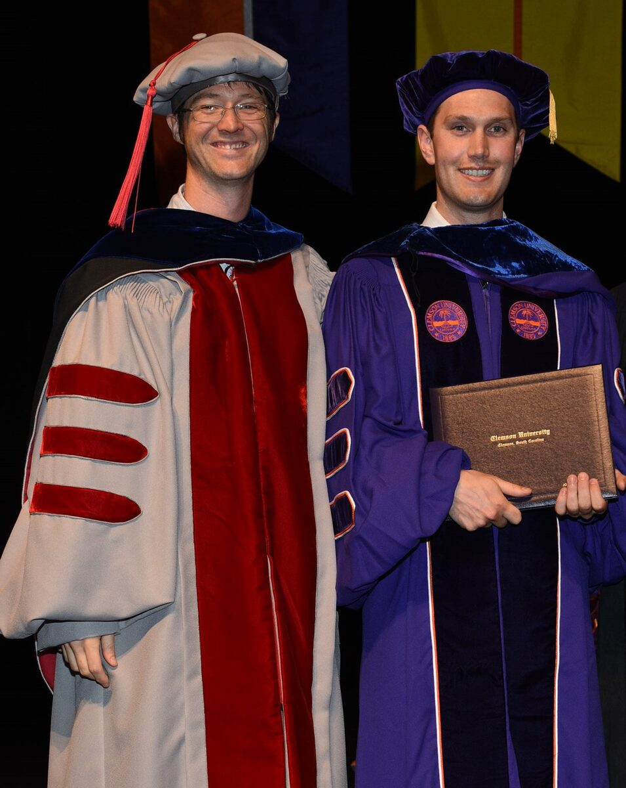
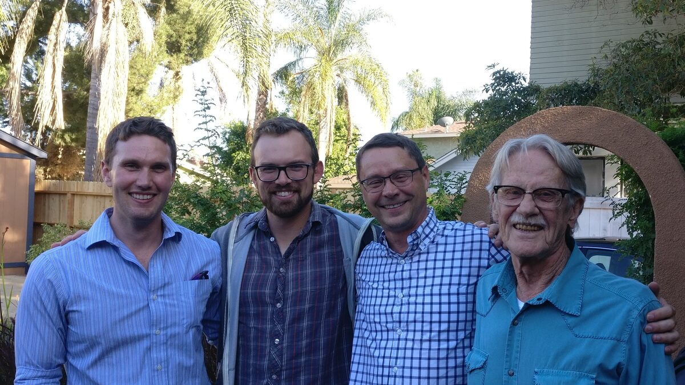

About Me
I am a Political-Geographical Economist. Here is a short version of how I came to this, as well as some other miscellaneous details about me.
I was born in Edmonton, Alberta, Canada and moved to the state of Washington for college when I was 18. I discovered economics while I was at Pacific Lutheran University, and I have never looked back. Pursuing this career led me to South Carolina, California, Utah, Germany, and now British Columbia, where I am an Assistant Professor of Economics at Thompson Rivers University.
Below are some pictures of me over these years, alongside some colleagues, mentors, and friends that I’ve been fortunate enough to meet along the way.


I have many academic inspirations, but Milton Friedman (Greed) holds the proud title of being my favorite Youtube and sparking my initial excursion into economics. My research as a whole is probably most inspired by Thomas Schelling, evident in my specializations on conflict economics and spatial modeling. I am also motivated by the classics in political economy, which has led me to incorporate politics, geography, and war into my thinking, and I quote these inspirations liberally:
“Commerce and manufacturers gradually introduced order and good government. And with them, the liberty and security of individuals, among the inhabitants of the country, who had before lived almost in a continual state of war with their neighbours and of servile dependency upon their superiors. This, though it has been the least observed, is by far the most important of all their effects.”
Adam Smith, The Wealth of Nations
I am a methodological pluralist, meaning I try to learn from sources as varied as narrative histories to laboratory experiments. I also have a general fascination with spatial evolution and an almost religious adherence to automating my workflow (hence my github.com/Jadamso account and Linux OS). I’ve worked on, or am working on, several R packages. The biggest three are
- STrollR: Space-Time standard errors for big-lattice data (Public)
- AncientR: Ancient geo-data on violence, politics, and geography (Private now, Public soon)
- SetupGameR: Laboratory experiments with R + Shiny (Private now, Public soon)
In addition to my main research questions, I am generally interested in Archeology, Anthropology, Urbanization, Game Theory, Computing, Geographic Information Systems, Spatial Statistics, Data Visualization, Epistemology, and History of Thought.